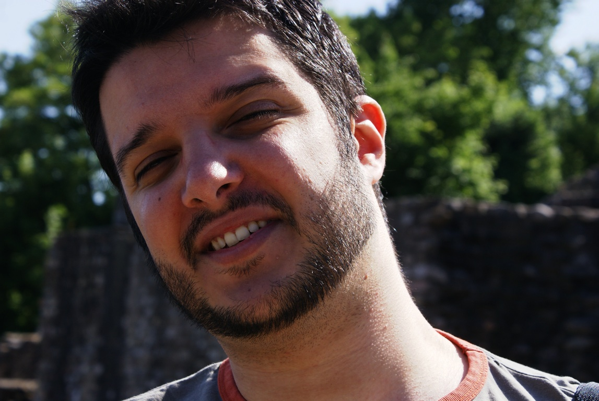

 |
Nuno D. Mendes(Currently at Network Modelling Group of IGC)Instituto de Engenharia de Sistemas e Computadores R. Alves Redol 9, 1º Esq, 1000-029, Lisboa, PORTUGAL Tel. +351 21 3100267 Fax. +351 21 3145843 |
I finished my five year degree in Information Systems and Computer Engineering at IST in July 2004. For six years I had been attending classes while also working as a software developer at a telecoms company.
I left the industry and decided to embrace the academic world in September 2004 when I became a Master's student in Information Systems and Computer Engineering at IST. I completed my Master's in November 2005 with a thesis on Inference of Complex Motifs using Biclustering Techniques, supervised by Ana Teresa Freitas (IST) and Arlindo Oliveira (IST).
In 2005 I was accepted in the first edition of the PhD Program in Computational Biology of the Calouste Gulbenkian Foundation.
In 2006 I became a PhD student in Computational Biology and a researcher at KDBIO Group of INESC-ID and BAOBAB Group at INRIA Rhône-Alpes. I completed my PhD in June 2011 under the supervision of Ana Teresa Freitas (IST) and Marie-France Sagot (INRIA Rhône-Alpes) with a thesis on Efficient algorithms for the identification of miRNA motifs in DNA sequences.
I am currently a Post-doctoral Fellow at the Network Modelling Group of the Gulbenkian Institute of Science.
Research interests | Publications | Software | Short CV | Personal | Documents
Last Update: July 7, 2011